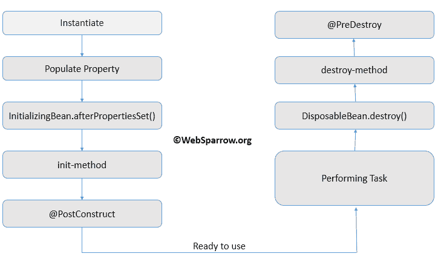
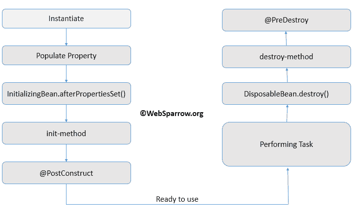

Question-Avantages & Disadvantages of spring container
Avantages
1)-Forces you to write more modular code
2)-Decouples the application
3)-Centralized configuration
4)-Control over lifetime of dependencies
5)-Takes care of long nested dependency chains
Disadvantages
1)-Another framework in your toolbox (another mindset to adapt)
2)-Hard to figure out the flow in the application. As in, what is the actual
3)-No build errors - requires some way of testing dependencies together (yes not unit tests)
4)-Requires configuration of dependencies.
Question-Avantage of annotation over XML configuration in java
Answer:-
Advantages of the annotation:
1) All the information is in a single file (no need to open two files to configure a given behavior)
2) When the class changes, no need to modify the xml file
Advantages of xml file:
1) Clear separation between the POJO and its behavior
Spring Security
******Principal:-Means currently login user into system.It is the information about currently login user.Actually, It is object that contain information about currently login user.
Important Point
==>>If you want to use spring security in spring boot you just need to add "spring-boot-starter-security" in pom.xml file .Then it will do following things by default
(a)Add manadatory authentication for all URL
(b)Add login form
(c)Handle login Error
(d)Create user and set a default password
How to configure authentication in spring security
==>>AuthenticationManager is responsible to manage Authentication in spring security.It have a method authenticate() But we do not deal with AuthenticationManager manager directly, We deal with using AuthenticationManagerBuilder
==>>To use the Spring security we need to extend WebSecurityConfigurerAdapter which provide a method
@EnableWebSecurity:-It tells the spring that it is a web security configuration
Question:-How to set passwordEncoder
Answer:-Just expose a bean of type passwordEncoder
If you want to change the dataSource infromation then you can pass that information in application.properties
Answer:-Autherization means to check if a request have autherity to perfom what its need to do.
Autherization in spring security
To configure the authorization you need an object of HttpSecurity,For that you have an other method in WebSecurityConfigurerAdapter
For spring security uses filter to filter every request

Spring security code that internally works

Step:-1
Authentication is a internal spring security interface and Authentication object are meant to hold the credential before the Authentication process and once user is Authenticated it hold the Principal.So,you can say Authentication is a data transfer object in Authentication process.
Step:-2
It passes the input credential to AuthenticationManager which is responsible to call the supports() mehtod of Authentication provider to check which provider will provide the Authentication
Each Authentication provider perform Authentication in a specific way.There are multiple Authentication provider in spring boot security
Step:-3
Now Authentication provider calls UserDetailsService,which return Userdetails instance and it flow back to AuthenticationManager which return the Authentication object with principal
Step:-4
That Authentication object with principal will be store in ThreadLocal but when an other request will come then it will be store in current running session and when it will require by the springFramework.It will copy back to ThreadLocal .That is why there are multiple filter to perform these actions
What is LDAP
LDAP is light weight Directory Access Protocol
LDAP is datastore(It stores data,mostly user identities)
It stores data in heirarchical format
Constructor based dependency:- Constructor based dependency injection using spring annotation
Difference between RowMapper and ResultSetExtrator is that with the mapper, we have access to a returned row while with the extractor we can use the whole result set. So if we need to map several rows returned from the query to a single object, we should use extractor, but in the other cases, a mapper should be sufficient. Every row with a corresponding bean object.
Question:-Advantage of jdbcTemplate over Hibernate
(i)-Hibernate create some extra overhead.
(ii)-Hibernate is not intended for batch-jobs.
Make this entry
This means that if you want to register a class in the application context you can use @Component to do so
The other stereotypes (Controller, Service, Repository) are simply specializations of the @Component class
Version 4.0.6.RELEASE
Spring MVC HandlerInterceptor(Project :- SpringMVCBasic)
Step:-1 spring-servelt.xml file changes
1-@ExceptionHandler
2-@ControllerAdvice
3-HandlerExceptionResolver
@ExceptionHandler:-
This is used at controller level so we need use for every controller
This is golobal way of handling Exception
HandlerExceptionResolver is an interface that has different implementations to resolve exception thrown during
execution. Some implementations are ExceptionHandlerExceptionResolver, HandlerExceptionResolverComposite,
SimpleMappingExceptionResolver etc. In our example we will use SimpleMappingExceptionResolver.
@ExceptionHandler
@ControllerAdvice
HandlerExceptionResolver
@ControllerAdvice or HandlerExceptionResolver works when there is Uncought Exception is there
Avantages
1)-Forces you to write more modular code
2)-Decouples the application
3)-Centralized configuration
4)-Control over lifetime of dependencies
5)-Takes care of long nested dependency chains
Disadvantages
1)-Another framework in your toolbox (another mindset to adapt)
2)-Hard to figure out the flow in the application. As in, what is the actual
3)-No build errors - requires some way of testing dependencies together (yes not unit tests)
4)-Requires configuration of dependencies.
Question-Avantage of annotation over XML configuration in java
Answer:-
Advantages of the annotation:
1) All the information is in a single file (no need to open two files to configure a given behavior)
2) When the class changes, no need to modify the xml file
Advantages of xml file:
1) Clear separation between the POJO and its behavior
Spring Security
******Principal:-Means currently login user into system.It is the information about currently login user.Actually, It is object that contain information about currently login user.
Important Point
==>>If you want to use spring security in spring boot you just need to add "spring-boot-starter-security" in pom.xml file .Then it will do following things by default
(a)Add manadatory authentication for all URL
(b)Add login form
(c)Handle login Error
(d)Create user and set a default password
How to configure authentication in spring security
==>>AuthenticationManager is responsible to manage Authentication in spring security.It have a method authenticate() But we do not deal with AuthenticationManager manager directly, We deal with using AuthenticationManagerBuilder
==>>To use the Spring security we need to extend WebSecurityConfigurerAdapter which provide a method
public void configureGlobal(AuthenticationManagerBuilder auth) throws Exception {
// write your logic
.....
}
Note:-@EnableWebSecurity:-It tells the spring that it is a web security configuration
Question:-How to set passwordEncoder
Answer:-Just expose a bean of type passwordEncoder
@Bean
public PasswordEncoder passwordEncoder() {
return new BCryptPasswordEncoder();
}
JDBC Authentication Example in Spring security
**you can change the query according to your database
public void configureGlobal(AuthenticationManagerBuilder auth) throws Exception {
auth
.jdbcAuthentication()
.usersByUsernameQuery("SELECT username, password, enabled FROM users WHERE username = ?")
.authoritiesByUsernameQuery("SELECT username, authority FROM authorities WHERE username = ?")
.dataSource(dataSource);
}
Note:-If you want to change the dataSource infromation then you can pass that information in application.properties
spring.dataSource.url= spring.dataSource.userName= spring.dataSource.password=Question:-What is Autherization in spring security
Answer:-Autherization means to check if a request have autherity to perfom what its need to do.
Autherization in spring security
To configure the authorization you need an object of HttpSecurity,For that you have an other method in WebSecurityConfigurerAdapter
configure(HttpSecurity http)throwException
{
then you can use
http.antMatcher("Url pattern that you want to match for given role")
}
How spring security Authentication worksFor spring security uses filter to filter every request
Spring security code that internally works
<filter> <filter-name>SpringSecurityFilterChain </filter-name> <filter-class>org.springFramework.web.filter.DelegatingFilterProxy <filter-class> </filter> <filter-mapping> <filter-name>SpringSecurityFilterChain </filter-name> <filter-pattern>/* <filter-pattern> </filter-mapping>Flow Diagram of how spring security works
Step:-1
Authentication is a internal spring security interface and Authentication object are meant to hold the credential before the Authentication process and once user is Authenticated it hold the Principal.So,you can say Authentication is a data transfer object in Authentication process.
Step:-2
It passes the input credential to AuthenticationManager which is responsible to call the supports() mehtod of Authentication provider to check which provider will provide the Authentication
Each Authentication provider perform Authentication in a specific way.There are multiple Authentication provider in spring boot security
Step:-3
Now Authentication provider calls UserDetailsService,which return Userdetails instance and it flow back to AuthenticationManager which return the Authentication object with principal
Step:-4
That Authentication object with principal will be store in ThreadLocal but when an other request will come then it will be store in current running session and when it will require by the springFramework.It will copy back to ThreadLocal .That is why there are multiple filter to perform these actions
What is LDAP
LDAP is light weight Directory Access Protocol
LDAP is datastore(It stores data,mostly user identities)
It stores data in heirarchical format
Constructor based dependency:- Constructor based dependency injection using spring annotation
Constructor based DI and Autowire by constructor Example
@Autowired
public Company(Employee employee) {
this.employee = employee;
}
Question:-Difference Between RowMapper and ResultSetExtractor Difference between RowMapper and ResultSetExtrator is that with the mapper, we have access to a returned row while with the extractor we can use the whole result set. So if we need to map several rows returned from the query to a single object, we should use extractor, but in the other cases, a mapper should be sufficient. Every row with a corresponding bean object.
Question:-Advantage of jdbcTemplate over Hibernate
(i)-Hibernate create some extra overhead.
(ii)-Hibernate is not intended for batch-jobs.
Make this entry
<property name="hibernate.jdbc.batch_size"> 50 </property>
then
for ( int i=0; i>100000; i++ )
{
String studentName = "DINESH " + i;
int rollNumber = 9 + i;
String course = "MCA " + i;
Student student = new Student();
student.setStudentName(studentName);
student.setRollNumber(rollNumber);
student.setCourse(course);
session.save(student);
if( i % 50 == 0 ) //Imprtant
{
session.flush();
session.clear();
}
}
you can do this but is not intended for batch-jobs.
Question:-What are the stereotype annotation in spring.
@Component is a generic stereotype annotation for any Spring-managed componentThis means that if you want to register a class in the application context you can use @Component to do so
The other stereotypes (Controller, Service, Repository) are simply specializations of the @Component class
Version 4.0.6.RELEASE
Spring MVC HandlerInterceptor(Project :- SpringMVCBasic)
Step:-1 spring-servelt.xml file changes
<mvc:interceptor> <mvc:mapping path="/empform.shashi"/> // remove this line if you want to use every where <bean class="com.patel.InterceptorExample"></bean> </mvc:interceptor>Step:-2 create HandlerInterceptor
public class InterceptorExample extends HandlerInterceptorAdapter {
@Override
public boolean preHandle(HttpServletRequest request, HttpServletResponse response, Object handler)
throws Exception {
For pre-processing
// If we return false it will be not proceed.
return true;
}
@Override
public void postHandle(HttpServletRequest request, HttpServletResponse response, Object handler,
ModelAndView modelAndView) throws Exception {
For post-processing
}
@Override
public void afterCompletion(HttpServletRequest request, HttpServletResponse response, Object handler, Exception ex)
throws Exception {
For afterCompletion rarely used
}
}
Exception handling in Spring MVC(Project :- MavenWeb)1-@ExceptionHandler
2-@ControllerAdvice
3-HandlerExceptionResolver
@ExceptionHandler:-
This is used at controller level so we need use for every controller
@ExceptionHandler(value=Exception.class)
@ResponseStatus(HttpStatus.INTERNAL_SERVER_ERROR)
public String handleException () {
System.out.println(" inside ExceptionHandling.java.handleException() at controller level");
return "exceptionExample";
}
@ControllerAdvice:-(There is no extra configuration required)This is golobal way of handling Exception
@ControllerAdvice
public class ExceptionHandlingControllerAdvice {
@ResponseStatus(HttpStatus.NOT_FOUND)
@ExceptionHandler(value=Exception.class)
public ModelAndView handleException()
{
System.out.println("ExceptionHandlingControllerAdvice.handleException()");
return new ModelAndView("exceptionExample");
}
}
HandlerExceptionResolver:-HandlerExceptionResolver is an interface that has different implementations to resolve exception thrown during
execution. Some implementations are ExceptionHandlerExceptionResolver, HandlerExceptionResolverComposite,
SimpleMappingExceptionResolver etc. In our example we will use SimpleMappingExceptionResolver.
<bean class="org.springframework.web.servlet.handler.SimpleMappingExceptionResolver">If we use all three then preority order will be
<property name="exceptionMappings">
<props> <prop key="java.lang.">exceptionExample </prop> </props>
</property>
<property name="defaultStatusCode" value="400"> </property>
<property name="defaultErrorView" value="ErrorPage"/>
</bean/>
@ExceptionHandler
@ControllerAdvice
HandlerExceptionResolver
@ControllerAdvice or HandlerExceptionResolver works when there is Uncought Exception is there
Question:-What is Spring
The Spring framework is a Java platform that provides comprehensive infrastructure support for developing Java applications.
Question:-What are the feature of Spring framework
1-Inversion of control (IOC):-Means inversion of control , Spring IOC is responsible for instantiating, configuring and assembling objects known as beans
2-Aspect oriented (AOP):-is used for separating cross-cutting concerns from the business logic of the application.
3-Dependency Injection(DI)
4-MVC Framework:-Spring comes with MVC web application framework
5-Transaction Management
Question:-Describe some of the standard Spring events
1-ContextRefreshedEvent
2-ContextStartedEvent
3-ContextStoppedEvent
4-ContextClosedEvent
5-RequestHandledEvent
Question:- Which are the Spring framework modules
Answer:-
4-Module of Spring Architecture
1-Core Container
(i)-Core
(ii)-Bean
(iii)-Context
(iv)-Expression language
2-Data Access
(i)JDBC module
(ii)ORM
(iii)Transaction Management module
3-Web module
(i)Web module
(ii)Web-MVC module
4-Miscellaneous module
(i)AOP
(ii)Aspects Spring module
(iii)Messaging module
Question:-how to create Request,Session,Global-session scope bean in Spring MVC
1-singleton
2-prototype
3-request
4-session
5-global session
Question:-Explain Bean life cycle in Spring framework

Note:-
The three commonly used implementations of ApplicationContext are
1-ClassPathXmlApplicationContext
2-FileSystemXmlApplicationContext
3-XmlWebApplicationContext
In how many ways, you can configure Spring into our application?
1-XML Based Configuration
2-Annotation-based configuration
3-Java-based configuration
What is Spring Java-Based Configuration?Core Application
To instantiate such config, you will need the help of AnnotationConfigApplicationContext class.
AnnotationConfigWebApplicationContext class. This implementation may be used when configuring
the Spring ContextLoaderListener servlet listener, Spring MVC DispatcherServlet etc.
Example:-
Question :-Are Singleton beans thread safe in Spring Framework Spring framework does not do anything under the hood concerning the multi-threaded behavior of a singleton bean. It is the developer’s responsibility to deal with concurrency issue and thread safety of the singleton bean.
Question:-Name some of the design patterns used in Spring Framework?
1-Proxy
2-Singleton
3-Template method
4-Front Controller
5-View Helper
6-Dependency injection
7-Factory pattern
Question:-Which DI would you suggest Constructor-based or setter-based DI? You can use both Constructor-based and Setter-based Dependency Injection. The best solution is using constructor arguments for mandatory dependencies and setters for optional dependencies.
Question:-Are there limitations with autowiring?
Primitive data types: You cannot autowire simple properties such as primitives, Strings, and Classes.
Confusing nature: Autowiring is less exact than explicit wiring, so if possible prefer using explicit wiring.
Can you inject null and empty string values in Spring?
Yes, you can.
Question :- DispatcherServlet
The Spring Web MVC framework is designed around a DispatcherServlet that handles all the
HTTP requests and responses.
Question:-What is a Proxy?
Question:-What are the different types of AutoProxying?
1-BeanNameAutoProxyCreator
2-DefaultAdvisorAutoProxyCreator
3-Metadata autoproxying
Question:-How can we integrate Spring and Hibernate using HibernateDaoSupport?
Question:-Types of the transaction management Spring support
1-Programmatic transaction management:
This means that you have managed the transaction with the help of programming. That gives you extreme flexibility, but it is difficult to maintain.
2-Declarative transaction management:
This means you separate transaction management from the business code. You only use annotations or XML based configuration to manage the transactions.
Question:- Which Transaction management type is more preferable?
Answer :-Declarative transaction management
Question:-Can we have multiple Spring configuration files in one project
Yes, in large projects, having multiple Spring configurations is recommended to increase maintainability and modularity.
You can load multiple Java-based configuration files:
ApplicationContext context = new ClassPathXmlApplicationContext("spring-all.xml");
and in spring-all.xml we can include multiple files.
The Spring framework is a Java platform that provides comprehensive infrastructure support for developing Java applications.
Question:-What are the feature of Spring framework
1-Inversion of control (IOC):-Means inversion of control , Spring IOC is responsible for instantiating, configuring and assembling objects known as beans
2-Aspect oriented (AOP):-is used for separating cross-cutting concerns from the business logic of the application.
3-Dependency Injection(DI)
4-MVC Framework:-Spring comes with MVC web application framework
5-Transaction Management
Question:-Describe some of the standard Spring events
1-ContextRefreshedEvent
2-ContextStartedEvent
3-ContextStoppedEvent
4-ContextClosedEvent
5-RequestHandledEvent
Question:- Which are the Spring framework modules
Answer:-
4-Module of Spring Architecture
1-Core Container
(i)-Core
(ii)-Bean
(iii)-Context
(iv)-Expression language
2-Data Access
(i)JDBC module
(ii)ORM
(iii)Transaction Management module
3-Web module
(i)Web module
(ii)Web-MVC module
4-Miscellaneous module
(i)AOP
(ii)Aspects Spring module
(iii)Messaging module
Question:-how to create Request,Session,Global-session scope bean in Spring MVC
1-singleton
2-prototype
3-request
4-session
5-global session
Question:-Explain Bean life cycle in Spring framework

Note:-
The three commonly used implementations of ApplicationContext are
1-ClassPathXmlApplicationContext
2-FileSystemXmlApplicationContext
3-XmlWebApplicationContext
In how many ways, you can configure Spring into our application?
1-XML Based Configuration
2-Annotation-based configuration
3-Java-based configuration
What is Spring Java-Based Configuration?Core Application
To instantiate such config, you will need the help of AnnotationConfigApplicationContext class.
public static void main(String[] args) {
ApplicationContext ctx = new AnnotationConfigApplicationContext(AppConfig.class);
MyService myService = ctx.getBean(MyService.class);
myService.doStuff();
}
To enable component scanning, just annotate your @Configuration class as follows:
@Configuration
@ComponentScan(basePackages = "com.howtodoinjava")
public class AppConfig {
...
}
If you are using above configuration in a web application then you will be usingAnnotationConfigWebApplicationContext class. This implementation may be used when configuring
the Spring ContextLoaderListener servlet listener, Spring MVC DispatcherServlet etc.
Example:-
<web-app>
<context-param>
<param-name>contextClass</param-name>
<param-value>
org.springframework.web.context.support.AnnotationConfigWebApplicationContext
</param-value>
</context-param>
<context-param>
<param-name>contextConfigLocation</param-name>
<param-value>com.howtodoinjava.AppConfig</param-value>
</context-param>
<!-- Bootstrap the root application context as usual using ContextLoaderListener-->
<listener>
<listener-class>org.springframework.web.context.ContextLoaderListener</listener-class>
</listener>
<!-- Declare a Spring MVC DispatcherServlet as usual -->
<servlet>
<servlet-name>dispatcher</servlet-name>
<servlet-class>org.springframework.web.servlet.DispatcherServlet</servlet-class>
<init-param>
<param-name>contextClass</param-name>
<param-value>
org.springframework.web.context.support.AnnotationConfigWebApplicationContext
</param-value>
</init-param>
<init-param>
<param-name>contextConfigLocation</param-name>
<param-value>com.howtodoinjava.web.MvcConfig</param-value>
</init-param>
</servlet>
<!-- map all requests for /app/* to the dispatcher servlet -->
<servlet-mapping>
<servlet-name>dispatcher</servlet-name>
<url-pattern>/app/*</url-pattern>
</servlet-mapping>
</web-app>>
Explain Spring Bean lifecycle?Question :-Are Singleton beans thread safe in Spring Framework Spring framework does not do anything under the hood concerning the multi-threaded behavior of a singleton bean. It is the developer’s responsibility to deal with concurrency issue and thread safety of the singleton bean.
Question:-Name some of the design patterns used in Spring Framework?
1-Proxy
2-Singleton
3-Template method
4-Front Controller
5-View Helper
6-Dependency injection
7-Factory pattern
Question:-Which DI would you suggest Constructor-based or setter-based DI? You can use both Constructor-based and Setter-based Dependency Injection. The best solution is using constructor arguments for mandatory dependencies and setters for optional dependencies.
Question:-Are there limitations with autowiring?
Primitive data types: You cannot autowire simple properties such as primitives, Strings, and Classes.
Confusing nature: Autowiring is less exact than explicit wiring, so if possible prefer using explicit wiring.
Can you inject null and empty string values in Spring?
Yes, you can.
Question :- DispatcherServlet
The Spring Web MVC framework is designed around a DispatcherServlet that handles all the
HTTP requests and responses.
Question:-What is a Proxy?
Question:-What are the different types of AutoProxying?
1-BeanNameAutoProxyCreator
2-DefaultAdvisorAutoProxyCreator
3-Metadata autoproxying
Question:-How can we integrate Spring and Hibernate using HibernateDaoSupport?
Question:-Types of the transaction management Spring support
1-Programmatic transaction management:
This means that you have managed the transaction with the help of programming. That gives you extreme flexibility, but it is difficult to maintain.
2-Declarative transaction management:
This means you separate transaction management from the business code. You only use annotations or XML based configuration to manage the transactions.
Question:- Which Transaction management type is more preferable?
Answer :-Declarative transaction management
Question:-Can we have multiple Spring configuration files in one project
Yes, in large projects, having multiple Spring configurations is recommended to increase maintainability and modularity.
You can load multiple Java-based configuration files:
@Configuration
@Import({MainConfig.class, SchedulerConfig.class})
public class AppConfig {
.....
}
Or load one XML file that will contain all other configs:ApplicationContext context = new ClassPathXmlApplicationContext("spring-all.xml");
and in spring-all.xml we can include multiple files.
Internationalization (i18n) in Spring
Steps to use Internationalization in Spring
Step:-1
At JSP page
properties files
shashi_en.properties
shashi_fr.properties
and content of the file
first.name=Prénom
last.name=Nom de famille
mobile.number=téléphone portable
Steps to use Internationalization in Spring
Step:-1
At JSP page
<tr> <td><spring:message code="first.name"></spring:message></td> <td><input type="text" name="fname"/></td> </tr> <tr> <td><spring:message code="last.name"></spring:message></td> <td><input type="text" name="lname"/></td> </tr> <tr> <td><spring:message code="mobile.number"></spring:message></td> <td><input type="text" name="mobile"/></td> </tr>Step:-2
<a href="hello.shashi?siteLanguage=en">English</a>Step:-3
<a href="hello.shashi?siteLanguage=fr">French</a>
<mvc:interceptors>
<bean class="org.springframework.web.servlet.i18n.LocaleChangeInterceptor">
<property name="paramName" value="siteLanguage"></property>
</bean>
</mvc:interceptors>
<bean id="localeResolver" class="org.springframework.web.servlet.i18n.CookieLocaleResolver">
</bean>
<bean id="messageSource" class="org.springframework.context.support.ReloadableResourceBundleMessageSource">
<property name="basename" value="/WEB-INF/shashi"></property>
</bean>
Step:-4properties files
shashi_en.properties
shashi_fr.properties
and content of the file
first.name=Prénom
last.name=Nom de famille
mobile.number=téléphone portable
How to use tiles in Spring MVC
<bean id="viewResolver" class="org.springframework.web.servlet.view.tiles3.TilesViewResolver"/> <bean id="tilesConfigurer" class="org.springframework.web.servlet.view.tiles3.TilesConfigurer"> <property name="definitions"> <list> <value>/WEB-INF/tiles.xml</value> </list> </property> </beanand then tiles.xml file
<tiles-definitions> <definition name="base.definition" template="/WEB-INF/jsp/layout.jsp"> <put-attribute name="title" value="" /> <put-attribute name="header" value="/WEB-INF/jsp/header.jsp" /> <put-attribute name="menu" value="/WEB-INF/jsp/menu.jsp" /> <put-attribute name="body" value="" /> <put-attribute name="footer" value="/WEB-INF/jsp/footer.jsp" /> </definition> <definition name="loginPage" extends="base.definition"> <put-attribute name="title" value="Home Page" /> <put-attribute name="body" value="/WEB-INF/jsp/body.jsp" /> </definition> </tiles-definitions>
How to make database connection in Spring MVC
Step:1-Creating dataSource
Step:1-Creating dataSource
<bean id="dataSource" class="org.springframework.jdbc.datasource.DriverManagerDataSource"> <property name="driverClassName" value="com.mysql.jdbc.Driver" /> <property name="url" value="jdbc:mysql://localhost:3306/test" /> <property name="username" value="root" /> <property name="password" value="220047" /> </bean>If you want to use simple mysql for database transaction
<bean id="ConnectionMgnDAO" class="com.connection.ConnectionMgn"> <property name="dataSource" ref="dataSource" /> </bean>If you want to use spring jdbc template for database transaction
<bean id="jt" class="org.springframework.jdbc.core.JdbcTemplate"> <property name="dataSource" ref="dataSource"></property> </bean>and Then
<bean id="dao" class="com.model.EmpDao"> <property name="template" ref="jt"></property> </bean
Use of Spring Tags :-
The Spring MVC form tags are very basic indeed, but they're better than nothing. If you're trying to render HTML forms, with submissions, error messages, and resubmissions, they take a lot of the annoyance away (especially for 'select' fields, which are a huge pain to handle otherwise). For anything more complex, they're pretty useless, but for forms, I see no reason to not use them.
Another benefit of spring tags is that when you make a mistake and you write the name of a property which doesn't exist in the object to populate it gives you an error, so you can easily find-out that you have to correct the name of the property in the path attribute of the tag.
The Spring MVC form tags are very basic indeed, but they're better than nothing. If you're trying to render HTML forms, with submissions, error messages, and resubmissions, they take a lot of the annoyance away (especially for 'select' fields, which are a huge pain to handle otherwise). For anything more complex, they're pretty useless, but for forms, I see no reason to not use them.
Another benefit of spring tags is that when you make a mistake and you write the name of a property which doesn't exist in the object to populate it gives you an error, so you can easily find-out that you have to correct the name of the property in the path attribute of the tag.
What is IOC:-
In Spring framework, IOC container is responsible to inject the dependency. We provide metadata to the IOC container either by XML file or annotation
In Spring framework, IOC container is responsible to inject the dependency. We provide metadata to the IOC container either by XML file or annotation
Dependency Injection in Spring:-
Dependency Injection (DI) is a design pattern that removes the dependency from the programming code so that it can be easy to manage.
and provide it using XML etc.
Dependency Lookup :-
The Dependency Lookup is an approach where we get the resource after demand.
Problem with this a approach is that if dependency will change then it require lot of changes.
Spring framework provides two ways to inject dependency
1-By Constructor
2-By Setter method
Spring framework provides two ways to inject dependency
1-By Constructor
2-By Setter method
Difference between constructor and setter injection
Partial dependency:can be injected using setter injection but it is not possible by constructor. Suppose there are 3 properties in a class, having 3 arg constructor and setters methods.
In such case, if you want to pass information for only one property, it is possible by setter method only
Overriding:Setter injection overrides the constructor injection. If we use both constructor and setter injection, IOC container will use the setter injection.
Partial dependency:can be injected using setter injection but it is not possible by constructor. Suppose there are 3 properties in a class, having 3 arg constructor and setters methods.
In such case, if you want to pass information for only one property, it is possible by setter method only
Overriding:Setter injection overrides the constructor injection. If we use both constructor and setter injection, IOC container will use the setter injection.
AutoWiring is the feature to inject the dependency implicitly
Advantage is
It requires the less code because we don't need to write the code to inject the dependency explicitly.
Disadvantage is
It is applicable for only object reference not for primitive data type.
Type of Autowiring:-
1-byName:-In case of byName autowiring mode, bean id and reference name must be same
2-byType :-In case of byType autowiring mode, bean id and
reference name may be different. But there must be only one bean of a type
3-byConstructor:-
In case of constructor autowiring mode, spring container injects the dependency by highest parameterized constructor.
This mode is very similar to byType, but it applies to constructor arguments.
Spring container looks at the beans on which autowire attribute is set constructor in the XML configuration file.
It then tries to match and wire its constructor's argument with exactly one of the beans name in the configuration file.
4-Autodetect (but it is deprecated since spring 3)
Advantage is
It requires the less code because we don't need to write the code to inject the dependency explicitly.
Disadvantage is
It is applicable for only object reference not for primitive data type.
Type of Autowiring:-
1-byName:-In case of byName autowiring mode, bean id and reference name must be same
2-byType :-In case of byType autowiring mode, bean id and
reference name may be different. But there must be only one bean of a type
3-byConstructor:-
In case of constructor autowiring mode, spring container injects the dependency by highest parameterized constructor.
This mode is very similar to byType, but it applies to constructor arguments.
Spring container looks at the beans on which autowire attribute is set constructor in the XML configuration file.
It then tries to match and wire its constructor's argument with exactly one of the beans name in the configuration file.
4-Autodetect (but it is deprecated since spring 3)
Note:-
@Autowired
is equivalent to Autowiring byType
@Autowired
@Qualifier("fullSpot")
is equivalent to Autowiring byType
read more...
@Autowired
is equivalent to Autowiring byType
@Autowired
@Qualifier("fullSpot")
is equivalent to Autowiring byType
read more...
@ResponseBody
@Component :-is a class level annotation and its purpose is to make the class as spring managed component
@Bean:- is a method level annotation and is used to explicitly declare and register a bean
Difference between @Component, @Service, @Controller, and @Repository in Spring
@Component is a generic annotation, Difference of @Service, @Repository, @Controller with @Component is they are special cases of @Component and used for particular purposes The difference is just classification only.
@Controller:-is an annotation used in Spring MVC framework indicates that a particular class serves the role of a controller Then the dispatcher scans such annotated classes for mapped methods and detects @RequestMapping annotations
Note:-
Difference of @Service, @Repository, @Controller with @Component is they are special cases of @Component and used for particular purposes where as @Component is a generic annotation
@RequestMapping(value="/orders", method=RequestMethod.GET) @ResponseBody public ListNow what the annotation means is that the returned value of the method will constitute the body of the HTTP response. Of course, an HTTP response can't contain Java objects. So this list of accounts is transformed to a format suitable for REST applications, typically JSON or XML.accountSummary() { return accountManager.getAllAccounts(); }
@Component :-is a class level annotation and its purpose is to make the class as spring managed component
@Bean:- is a method level annotation and is used to explicitly declare and register a bean
Difference between @Component, @Service, @Controller, and @Repository in Spring
@Component is a generic annotation, Difference of @Service, @Repository, @Controller with @Component is they are special cases of @Component and used for particular purposes The difference is just classification only.
@Controller:-is an annotation used in Spring MVC framework indicates that a particular class serves the role of a controller Then the dispatcher scans such annotated classes for mapped methods and detects @RequestMapping annotations
Note:-
Difference of @Service, @Repository, @Controller with @Component is they are special cases of @Component and used for particular purposes where as @Component is a generic annotation
Bean:-is a java object that is managed by IOC container.
Note:-The Spring container is responsible for instantiating, configuring, and assembling the Spring beans
BeanFactory VS ApplicationContext
BeanFactory is also called basic IOC and ApplicationContext is called Advanced IOC because it implement the BeanFactory so it cantain all the feature of BeanFactory and some extra feature that is why it is known as Advanced IOC
It uses eager loading, so every bean instantiate after the ApplicationContext is started up, where as BeanFactory uses lazy loading.So we use BeanFactory when memory consumption might be critical because it will load the object when it will be require. ApplicationContext instantiate bean when started so consume memory but works fast. and also BeanFactory is lightweight.
ApplicationContext have some extra feature
1)Bean instantiation/wiring
2)Automatic BeanPostProcessor registration
3)Automatic BeanFactoryPostProcessor registration
4)Convenient MessageSource access (for i18n)
5)ApplicationEvent publication
Important Spring does a lot of magic on return types , but also on the parameter types. This allow you to write code in a style that is more intuitive for you. ie the following two example are same
Note:-The Spring container is responsible for instantiating, configuring, and assembling the Spring beans
BeanFactory VS ApplicationContext
BeanFactory is also called basic IOC and ApplicationContext is called Advanced IOC because it implement the BeanFactory so it cantain all the feature of BeanFactory and some extra feature that is why it is known as Advanced IOC
It uses eager loading, so every bean instantiate after the ApplicationContext is started up, where as BeanFactory uses lazy loading.So we use BeanFactory when memory consumption might be critical because it will load the object when it will be require. ApplicationContext instantiate bean when started so consume memory but works fast. and also BeanFactory is lightweight.
ApplicationContext have some extra feature
1)Bean instantiation/wiring
2)Automatic BeanPostProcessor registration
3)Automatic BeanFactoryPostProcessor registration
4)Convenient MessageSource access (for i18n)
5)ApplicationEvent publication
Important Spring does a lot of magic on return types , but also on the parameter types. This allow you to write code in a style that is more intuitive for you. ie the following two example are same
@RequestMapping(value="/)
public ModelAndView mainPage()
{
Model m=new Model();
m.put("key","value");
return new ModelAndView(m,"main");
}
AND
@RequestMapping(value="/)
public ModelAndView mainPage(Model m)
{
m.put("key","value");
return "main";
}
What is Enumeration :-
Enumeration is a interface define the method by which you can enumerate the element in a collection of object.
Enumeration define two Methods
1)-Boolean hasMore Element().
2)-object nextElement().
Question:-What is difference between ArrayList and Vector.
Question:-What is collections in java
Question:-What is collections in java
Question:-Why we required Struts Tags and interceptor in Struts2.
Question:-What is String literal and Pool and exlpain String Heap
Question:-Explain the Life cycle of Servlet
Question:-What is JSp
Question:-What are JSP Syntax (Directive,Declaration,Expression,scriplet,Action,Comment) and thier Syntax
Question:-Explain Jsp page Lifecycle with diagram
Question:-what is implicit objects
Question:-How does handle JSP run-time exception
Enumeration is a interface define the method by which you can enumerate the element in a collection of object.
Enumeration define two Methods
1)-Boolean hasMore Element().
2)-object nextElement().
Question:-What is difference between ArrayList and Vector.
Question:-What is collections in java
Question:-What is collections in java
Question:-Why we required Struts Tags and interceptor in Struts2.
Question:-What is String literal and Pool and exlpain String Heap
Question:-Explain the Life cycle of Servlet
Question:-What is JSp
Question:-What are JSP Syntax (Directive,Declaration,Expression,scriplet,Action,Comment) and thier Syntax
Question:-Explain Jsp page Lifecycle with diagram
Question:-what is implicit objects
Question:-How does handle JSP run-time exception
About name and location of applicationContext.xml:-
Yes we can change the name and location of applicableContext.xml file(if you are using xml) If it is a basic application then by default it will be inside src folder directly and if we want to change the name and location then it will be like given below
Yes we can change the name and location of applicableContext.xml file(if you are using xml) If it is a basic application then by default it will be inside src folder directly and if we want to change the name and location then it will be like given below
ApplicationContext context = new ClassPathXmlApplicationContext("config/weCanchangeNameAndLocation.xml");
Student stBean = (Student) context.getBean("studentbean");
System.out.println("then prpperty of the bean : "+stBean.getName());
If you are using BeanFactory
Resource resource=new ClassPathResource("config/weCanchangeNameAndLocation.xml");
BeanFactory factory=new XmlBeanFactory(resource);
Student stBean1 =(Student)factory.getBean("studentbean");
System.out.println("the propery of the bean :"+stBean1.getName());
InCase of annotation :-
AbstractApplicationContext context = new AnnotationConfigApplicationContext(ConfigurationClass.class);
Student st=(Student)context.getBean("studentBean");
and ConfigurationClass class will be like
@Configuration
@ComponentScan("com.bean")
public class ConfigurationClass {
@Autowired
private Employee employee;
@Bean(name="studentBean")
public Student shashi()
{
return new Student();
}
}
If it is web application :
if you have applicableContext.xml file and spring-servlet.xml file then bean define in applicableContext.xml file will be global while define in spring-servlet will be available for this servlet only Then we can put this file in : webContent/WEB-INF/applicableContext.xml if you want to change the location then made the below entry in web.xml file like this
best solution is that put applicableContext.xml file anywhere use
ApplicationContext ac = new FileSystemXmlApplicationContext("src/WEB-INF/config/applicationContext.xml");
if you have applicableContext.xml file and spring-servlet.xml file then bean define in applicableContext.xml file will be global while define in spring-servlet will be available for this servlet only Then we can put this file in : webContent/WEB-INF/applicableContext.xml if you want to change the location then made the below entry in web.xml file like this
<context-param> <param-name>contextConfigLocation</param-name> <param-value>/WEB-INF/conf/ApplicationContext.xml</param-value> </context-param>But
best solution is that put applicableContext.xml file anywhere use
ApplicationContext ac = new FileSystemXmlApplicationContext("src/WEB-INF/config/applicationContext.xml");
Now use of spring-servlet.xml to file to satatisfy dependency , code as below
public class ConnectionMgn {
private DataSource dataSource;
// This is the setter for dataSource
public void setDataSource(DataSource dataSource) {
this.dataSource = dataSource;
// now you can use dataSource to get connection.
}
and then spring-servlet.xml
<bean id="ConnectionMgnDAO" class="com.connection.ConnectionMgn">
<property name="dataSource" ref="dataSource" />
</bean>
if you want to use this class in other class then you can use
@Autowired
ConnectionMgn Mgn;
then use Mgn.
Note:- But in case of other beans where we no need of satatisfy dependency
simply use
@Autowired
Student st;
inside a class you will get the object
Student class as below :-
@Component
public class Student {
private String name;
public String getName() {
return name;
}
public void setName(String name) {
this.name = name;
}
Important :-
BeanFactory interface <---- ApplicationContext interface <----- WebApplicationContext interface
Mean BeanFactoryis root interface.
ApplicationContext:-
is Root Application Context and there will be only one applicationContext per web application. Application Context is the context initialized by a ContextLoaderListener or ContextLoaderServlet that we define in our application’s web.xml file and the configuration would look something like this
It has servlet context information. A single web application can have multiple WebApplicationContext and each Dispatcher servlet is associated with a WebApplicationContext. and is loaded based on the dispatcher servlets configured in the application’s web.xml file. So each dispatcher servlet has its own servlet-context initialized from <servlet-name>-servlet.xml file. This allows us to categorize the incoming requests based on the servlet’s url-pattern and handle them accordingly
BeanFactory interface <---- ApplicationContext interface <----- WebApplicationContext interface
Mean BeanFactoryis root interface.
ApplicationContext:-
is Root Application Context and there will be only one applicationContext per web application. Application Context is the context initialized by a ContextLoaderListener or ContextLoaderServlet that we define in our application’s web.xml file and the configuration would look something like this
<listener> <listener-class>org.springframework.web.context.ContextLoaderListener</listener-class> </listener> <context-param> <param-name>contextConfigLocation</param-name> <param-value>/WEB-INF/root-context.xml</param-value> </context-param>In the above configuration, we are asking Spring to load root-context.xml and create an Application Context from it. If contextConfigLocation is not mentioned as in the below snippet, it will by default look for /WEB-INF/applicationContext.xml.
<listener> <listener-class>org.springframework.web.context.ContextLoaderListener</listener-class> </listener>WebApplicationContext:-
It has servlet context information. A single web application can have multiple WebApplicationContext and each Dispatcher servlet is associated with a WebApplicationContext. and is loaded based on the dispatcher servlets configured in the application’s web.xml file. So each dispatcher servlet has its own servlet-context initialized from <servlet-name>-servlet.xml file. This allows us to categorize the incoming requests based on the servlet’s url-pattern and handle them accordingly
<servlet> <servlet-name>mvc-dispatcher</servlet-name> <servlet-class>org.springframework.web.servlet.DispatcherServlet</servlet-class> <init-param> <param-name>contextConfigLocation</param-name> <param-value>/WEB-INF/sample-dispatcher-servlet.xml</param-value> </init-param> <load-on-startup>1</load-on-startup> </servlet> <servlet-mapping> <servlet-name>mvc-dispatcher</servlet-name> <url-pattern>/</url-pattern> </servlet-mapping>Note:-Dependency Injection is passing dependency to other objects.
XmlWebApplicationContext class:-Is a implemetation class of WebApplicationContext interface.
Important :-
default-autowire="byName" default-autowire-candidates="*" >
Beans element default-autowireis used to define the default autowiring method.
Here I am defining the default autowiring method to be byName.
Beans element default-autowire-candidates is used to provide the pattern for bean names that can be used for autowiring.
For simplicity I am allowing all the bean definitions to be eligible for autowiring.
It is useful when we have multiple bean definitions for a single type and we want some of them not to be autowired.
Important :-
default-autowire="byName" default-autowire-candidates="*" >
Beans element default-autowireis used to define the default autowiring method.
Here I am defining the default autowiring method to be byName.
Beans element default-autowire-candidates is used to provide the pattern for bean names that can be used for autowiring.
For simplicity I am allowing all the bean definitions to be eligible for autowiring.
<bean name="employee1" class="com.journaldev.spring.autowiring.model.Employee" autowire-candidate="false"><br/> <property name="name" value="Dummy Name"></property> </bean>autowire-candidate="false" is used in a bean definition to make it ineligible for autowiring.
It is useful when we have multiple bean definitions for a single type and we want some of them not to be autowired.
Dependency Injection using collection
We can inject collection values by constructor in spring framework. There
can be used three elements inside the constructor-arg element.
It can be:
1-list
2-set
3-map
Example:-
We can inject collection values by setter method in spring framework. There
can be used three elements inside the property element.
It can be:
1-list
2-set
3-map
Example:-
We can inject collection values by constructor in spring framework. There
can be used three elements inside the constructor-arg element.
It can be:
1-list
2-set
3-map
Example:-
<bean id="q" class="com.javatpoint.Question"> <constructor-arg value="111"></constructor-arg> <constructor-arg value="What is java?"></constructor-arg> <constructor-arg> <list> <value>Java is a programming language</value> <value>Java is a Platform</value> <value>Java is an Island of Indonasia</value> </list> </constructor-arg> </bean>Setter Injection :-
<bean id="obj" class="com.javatpoint.Employee">
<property name="id">
<value>20</value>
</property>
<property name="name">
<value>Arun</value>
</property>
<property name="city">
<value>ghaziabad</value>
</property>
</bean>
Setter Injection with Collection ExampleWe can inject collection values by setter method in spring framework. There
can be used three elements inside the property element.
It can be:
1-list
2-set
3-map
Example:-
<bean id="q" class="com.javatpoint.Question"> <property name="id" value="1"></property> <property name="name" value="What is Java?"></property> <property name="answers"> <list> <value>Java is a programming language</value> <value>Java is a platform</value> <value>Java is an Island</value> </list> </property> </bean>
Dependency Injection with Factory Method in Spring :-
To do so, we can use two attributes of bean element
1-factory-method: represents the factory method that will be invoked to inject the bean.
2-factory-bean: represents the reference of the bean by which factory method will be invoked.
It is used if factory method is non-static.
Example:1- If class is like this
To do so, we can use two attributes of bean element
1-factory-method: represents the factory method that will be invoked to inject the bean.
2-factory-bean: represents the reference of the bean by which factory method will be invoked.
It is used if factory method is non-static.
Example:1- If class is like this
public class A {
private static final A obj=new A();
private A(){System.out.println("private constructor");}
public static A getA(){
System.out.println("factory method ");
return obj;
}
public void msg(){
System.out.println("hello user");
}
}
Then dependency injection will be like :
<bean id="a" class="com.javatpoint.A" factory-method="getA"></bean>Example:2-
public class A {
public void print() {
System.out.println("hello a");
}
}
public class PrintableFactory {
public static Printable getPrintable(){ // It is static method
return new A();
}
}
Then dependency injection will be :-<bean id="p" class="com.javatpoint.PrintableFactory" factory-method="getPrintable"></bean>Example:3-
public class PrintableFactory {
//non-static factory method
public Printable getPrintable(){
return new A();
}
}
Then dependency injection will be like this<bean id="pfactory" class="com.javatpoint.PrintableFactory"></bean> <bean id="p" class="com.javatpoint.PrintableFactory" factory-method="getPrintable" factory-bean="pfactory"></bean>
AOP:-
A Concern is a term that refers to a part of the system divided on the basis of the functionality
Concerns are two types:-
The concerns representing single and specific functionality for primary requirements are known as core concerns.
OR
Primary functionlity of the system is knows as core concerns.
For example: Business logic
The concerns representing functionalities for secondary requirements are referred to as
crosscutting concerns or system-wide concerns.
OR
The crosscutting concern is a concern which is applicable throughout the application and it affects the entire
application.
For example:-logging, security and data transfer are the concerns which are needed in almost every module of
an application, hence they are cross-cutting concerns.
A Concern is a term that refers to a part of the system divided on the basis of the functionality
Concerns are two types:-
The concerns representing single and specific functionality for primary requirements are known as core concerns.
OR
Primary functionlity of the system is knows as core concerns.
For example: Business logic
The concerns representing functionalities for secondary requirements are referred to as
crosscutting concerns or system-wide concerns.
OR
The crosscutting concern is a concern which is applicable throughout the application and it affects the entire
application.
For example:-logging, security and data transfer are the concerns which are needed in almost every module of
an application, hence they are cross-cutting concerns.
Why AOP :-
It provides the pluggable way to dynamically add the additional concern before, after or around the actual logic.
AOP Concepts and Terminology:-
Join point:-
Join point is any point in your program such as method execution, exception handling, field access etc.
Spring supports only method execution join point.
Advice:-
Advice represents an action taken by an aspect at a particular join point. There are different types of advices
Before Advice: it executes before a join point.
After Returning Advice: it executes after a joint point completes normally.
After Throwing Advice: it executes if method exits by throwing an exception.
After (finally) Advice: it executes after a join point regardless of join point exit whether normally or exceptional return.
Around Advice: It executes before and after a join point.
Pointcut:-
It is an expression language of AOP that matches join points.
Introduction:-
It means introduction of additional method and fields for a type.It allows you to introduce new interface to any advised object.
Target Object:-
It is the object.It is also known as proxied object in spring because Spring AOP is implemented using runtime proxies.
Need to read more about Target Object Aspect:-
It is a class that contains advices, joinpoints etc.
AOP Proxy:-
It will be a JDK dynamic proxy or CGLIB proxy in spring framework.
Weaving:-
It is the process of linking aspect with other application types.Weaving can be done at compile time, load time or runtime.
Spring AOP performs weaving at runtime
AOP Implementations:-
AOP implementations are provided by:
AspectJ
Spring AOP
JBoss AOP
Spring AOP
Spring AOP can be used by 3 ways given below
1-By Spring1.2 Old style (dtd based) (also supported in Spring3)
2-By AspectJ annotation-style
3-By Spring XML configuration-style(schema based)
Steps to use AspectJ annotation-style:-
Step 1:- Make that below entry inside spring-servlet.xml file
<aop:aspectj-autoproxy/> but if you want to use without xml means even without spring-servlet.xml
Then we need do like below
Transaction managent using annotation:-
Step:1-Make the below entry in xxxx-spring.xml file
You can also use @EnableTransactionManagement on configuration class to enable the @transaction instead of
making entry in xxxx-servlet.xml file.
Transaction managent using only xml:-
It provides the pluggable way to dynamically add the additional concern before, after or around the actual logic.
AOP Concepts and Terminology:-
Join point:-
Join point is any point in your program such as method execution, exception handling, field access etc.
Spring supports only method execution join point.
Advice:-
Advice represents an action taken by an aspect at a particular join point. There are different types of advices
Before Advice: it executes before a join point.
After Returning Advice: it executes after a joint point completes normally.
After Throwing Advice: it executes if method exits by throwing an exception.
After (finally) Advice: it executes after a join point regardless of join point exit whether normally or exceptional return.
Around Advice: It executes before and after a join point.
Pointcut:-
It is an expression language of AOP that matches join points.
Introduction:-
It means introduction of additional method and fields for a type.It allows you to introduce new interface to any advised object.
Target Object:-
It is the object.It is also known as proxied object in spring because Spring AOP is implemented using runtime proxies.
Need to read more about Target Object Aspect:-
It is a class that contains advices, joinpoints etc.
AOP Proxy:-
It will be a JDK dynamic proxy or CGLIB proxy in spring framework.
Weaving:-
It is the process of linking aspect with other application types.Weaving can be done at compile time, load time or runtime.
Spring AOP performs weaving at runtime
AOP Implementations:-
AOP implementations are provided by:
AspectJ
Spring AOP
JBoss AOP
Spring AOP
Spring AOP can be used by 3 ways given below
1-By Spring1.2 Old style (dtd based) (also supported in Spring3)
2-By AspectJ annotation-style
3-By Spring XML configuration-style(schema based)
Steps to use AspectJ annotation-style:-
Step 1:- Make that below entry inside spring-servlet.xml file
<aop:aspectj-autoproxy/> but if you want to use without xml means even without spring-servlet.xml
Then we need do like below
@Configuration
@EnableAspectJAutoProxy // Need to use this annotation above the configuration class
public class AppConfig {
@Bean
public FooService fooService() {
return new FooService();
}
@Bean
public MyAspect myAspect() {
return new MyAspect();
}
}
Step 2:-
Create a class like this
@Aspect // class with this annotation
@Component
public class AspectClass {
@Before("execution(* com.patel.LoginAction.next(..))")
public void myBeforeAdvice(JoinPoint p)
{
System.out.println("Before advice is applied ....");
System.out.println("Name of the method is .(Before)..."+p.getSignature());
}
@After("execution(* com.patel.LoginAction.next(..))")
public void afterAdvice(JoinPoint p)
{
System.out.println("After advice is applied .....");
System.out.println("Name of the method is .(After)..."+p.getSignature());
}
@Around("execution(* com.patel.LoginAction.next(..))")
public Object aroundAdvice(ProceedingJoinPoint p) throws Throwable
{
System.out.println("Before Calling Method...");
Object result = p.proceed();
System.out.println("After calling method...");
System.out.println("Name of the method is : "+p.getSignature());
return result;
}
@AfterReturning("execution(* com.patel.LoginAction.next(..))")
public void myBeforeAdvice(JoinPoint p)
{
System.out.println("AfterReturning advice is applied ....");
}
@AfterThrowing("execution(* com.patel.LoginAction.next(..))")
public void myBeforeAdvice(JoinPoint p)
{
System.out.println("AfterThrowing advice is applied ....");
}
}
Transaction management in SpringTransaction managent using annotation:-
Step:1-Make the below entry in xxxx-spring.xml file
<tx:annotation-driven proxy-target-class="true" transaction-manager="transactionManager" /> <bean id="transactionManager" class="org.springframework.jdbc.datasource.DataSourceTransactionManager"> <property name="dataSource" ref="dataSource" /> </beanStep:2-Then we can use @Transaction directly
@Transactional(rollbackFor=Exception.class)
public class ServiceImp implements ServiceDao{
@Autowired
EmpDao emp;
@Override
public int save(Emp p) {
return emp.save(p);
}
@Override
public int update(Emp p) {
return emp.update(p);
}
}
Note:-You can also use @EnableTransactionManagement on configuration class to enable the @transaction instead of
making entry in xxxx-servlet.xml file.
Transaction managent using only xml:-
<tx:advice id="txAdvice" transaction-manager="transactionManager">
<tx:attributes>
<tx:method name="createEmployee" rollback-for="Exception"></tx:method>
</tx:attributes>
</tx:advice>
<aop:config proxy-target-class="true">
<aop:pointcut expression="execution(* com.javatpoint.EmpDAOImpl.createEmployee(..))" id="pid"></aop:pointcut>
<aop:advisor advice-ref="txAdvice" pointcut-ref="pid"></aop:advisor>
</aop:config>
<bean class="org.springframework.jdbc.datasource.DataSourceTransactionManager" id="transactionManager">
<property name="dataSource" ref="dataSource"></property>
AOP using only xml:-
<bean id="track" class="com.javatpoint.TrackOperation"></bean>
<aop:config>
<aop:aspect id="myAspect" ref="track">
<aop:pointcut expression="execution(* com.javatpoint.Student.study(..))" id="pointCutBefore"/>
<aop:before method="myadvice" pointcut-ref="pointCutBefore" />
</aop:aspect>
</aop:config
Now TrackOperation class:-
public class TrackOperation {
public void myadvice(JoinPoint jp)
{
System.out.println("additional concern");
}
}
Type of view resolver in spring
1-AbstractCachingViewResolver
2-XmlViewResolver
3-ResourceBundleViewResolver
4-UrlBasedViewResolver
5-InternalResourceViewResolver
6-VelocityViewResolver/FreeMarkerViewResolver
7-ContentNegotiatingViewResolver
1-AbstractCachingViewResolver
2-XmlViewResolver
3-ResourceBundleViewResolver
4-UrlBasedViewResolver
5-InternalResourceViewResolver
6-VelocityViewResolver/FreeMarkerViewResolver
7-ContentNegotiatingViewResolver
Problems of JDBC API
The problems of JDBC API are as follows:
1-We need to write a lot of code before and after executing the query, such as creating connection,
statement, closing resultset, connection etc.
2-We need to perform exception handling code on the database logic.
3-We need to handle transaction.
4-Repetition of all these codes from one to another database logic is a time consuming task.
Spring Jdbc Approaches
Spring framework provides following approaches for JDBC database access:
JdbcTemplate
NamedParameterJdbcTemplate
SimpleJdbcTemplate
SimpleJdbcInsert and SimpleJdbcCall
JdbcTemplate :- This is the central class.
Method which use in general :-
1)public int update(String query) used for DML
2)public void execute(String query) used for DDL
3)public int[] batchUpdate (String query, List<Object[]> list);
4)public Map<String, Object> simpleJdbcProcCall (String procedure);
5)public Map<String, Object> jdbcProcedureInParam (String procedure, Object[] inParameters);
Question :-what is controller?
Answer :- Is a class that handle HTTP request.
Question:-what is DispatcherServlet
Answer :- Is a central controller.
Question:-What are the scope of Spring beans.
Answer :-1)Singleton 2)Prototype 3)request 4)session 5) global-session
The problems of JDBC API are as follows:
1-We need to write a lot of code before and after executing the query, such as creating connection,
statement, closing resultset, connection etc.
2-We need to perform exception handling code on the database logic.
3-We need to handle transaction.
4-Repetition of all these codes from one to another database logic is a time consuming task.
Spring Jdbc Approaches
Spring framework provides following approaches for JDBC database access:
JdbcTemplate
NamedParameterJdbcTemplate
SimpleJdbcTemplate
SimpleJdbcInsert and SimpleJdbcCall
JdbcTemplate :- This is the central class.
Method which use in general :-
1)public int update(String query) used for DML
2)public void execute(String query) used for DDL
3)public int[] batchUpdate (String query, List<Object[]> list);
4)public Map<String, Object> simpleJdbcProcCall (String procedure);
5)public Map<String, Object> jdbcProcedureInParam (String procedure, Object[] inParameters);
Question :-what is controller?
Answer :- Is a class that handle HTTP request.
Question:-what is DispatcherServlet
Answer :- Is a central controller.
Question:-What are the scope of Spring beans.
Answer :-1)Singleton 2)Prototype 3)request 4)session 5) global-session
Example :-
// Setter method based DI
// Setter method based DI
@Autowired
public void setDepartment(Department department) {
this.department = department;
}
// Constructor based DI
@Autowired
public Company(Employee employee) {
this.employee = employee;
}
What is use of BindingResult result
Answer:-BindingResult use to check if there is any Binding Error
Answer:-BindingResult use to check if there is any Binding Error
public String submit(@ModelAttribute("emp")Employee emp, BindingResult result, ModelMap model) {
if (result.hasErrors()) {
return "error";
}
What is @InitBinder and WebDataBinder in Spring MVC
Answer:-If you want to customize the data binding inside a controller then we use @InitBinder annotation on method and WebDataBinder as argument as below :
@InitBinder
CustomDateEditor is a property editor which is built in class in mvc like NumberEditor,BooleanEditor
Question :- Can we create our own property editor.
Answer :- Yes we can create our own property editor ,Syntax as below
Answer :- We need to flow the below steps for form validation
Step (1)
Changes inside controller
And to use these annotation @size and @Valid we need any third party validator
library and in our project we are using Hibernate Validator Library.
Answer:-If you want to customize the data binding inside a controller then we use @InitBinder annotation on method and WebDataBinder as argument as below :
@InitBinder
public void bhusan(WebDataBinder binder) {
System.out.println("This is the InitBinder method of HomePageSubmitAction");
binder.setAllowedFields(new String[]{"name","contactNumber","id"});
}
CustomDateEditor:-CustomDateEditor is a property editor which is built in class in mvc like NumberEditor,BooleanEditor
Question :- Can we create our own property editor.
Answer :- Yes we can create our own property editor ,Syntax as below
public class CustomEditorExample extends PropertyEditorSupport {
@Override
public void setAsText(String text) throws IllegalArgumentException {
System.out.println("CustomEditorExample.java || This is a Custom editor Class");
}
}
Question :-How to use form Validation in Spring MVC.Answer :- We need to flow the below steps for form validation
Step (1)
public class Employee {
@Size(min=18 , Max=40)
private int age;
private String name;
}
Step(2)Changes inside controller
@RequestMapping(value = "/addEmployee", method = RequestMethod.POST)Step(3)
public String submit(@Valid @ModelAttribute("emp")Employee emp, BindingResult result, ModelMap model) {
}
And to use these annotation @size and @Valid we need any third party validator
library and in our project we are using Hibernate Validator Library.
@Configuration
@Configuration annotation is part of the spring core framework. Spring Configuration annotation indicates that the class has @Bean definition methods. So Spring container can process the class and generate Spring Beans to be used in the application.
@Autowired
It is use to mark a dependency which Spring is going to resolve and inject. We can use this annotation with a constructor, setter, or field injection.
Example
It is use for injecting property values into beans. It’s compatible with constructor, setter, and field injection.
Example
The @Order annotation defines the sorting order of an annotated component or bean. It has an optional value argument which determines the order of the component.
Type Autowiring Example
If there is a interface
here neither name nor type matches because 'Formatter' is a interface.
@Configuration annotation is part of the spring core framework. Spring Configuration annotation indicates that the class has @Bean definition methods. So Spring container can process the class and generate Spring Beans to be used in the application.
@Autowired
It is use to mark a dependency which Spring is going to resolve and inject. We can use this annotation with a constructor, setter, or field injection.
Example
/*
Field injection Auto-wire
*/
@Autowired
private Employee employee;
/*
Setter injection Auto-wire
*/
@Autowired
public void setTreasureMap(TreasureMap treasureMap) {
this.treasureMap = treasureMap;
}
/*
Constructor injection Auto-wired
*/
@Autowired
public Pirate(Student student,@Value("chandra bhusan patel")String name) {
super();
this.student = student;
this.name = name;
}
@ValueIt is use for injecting property values into beans. It’s compatible with constructor, setter, and field injection.
Example
/*
* Use of @value on field
*/
@Value("Student_name")
private String name;
@Order AnnotationThe @Order annotation defines the sorting order of an annotated component or bean. It has an optional value argument which determines the order of the component.
Type Autowiring Example
If there is a interface
interface
public interface Formatter {
public void format();
}
and two classes implementing this interface
Ist class
@Component
public class BarFormatter implements Formatter {
public void format() {
System.out.println("This is the format method of BarFormatter");
}
}
2nd class
@Component
public class SimpleFormatter implements Formatter {
public void format() {
System.out.println("This is the format Method of SimpleFormatter");
}
}
In configuration class we can inject the dependecy as below
Ist(This is autowiring by type)@Autowired private BarFormatter bar; @Autowired private SimpleFormatter sim;2nd(This is autowiring by name)
@Autowired private Formatter barFormatter; @Autowired private Formatter simpleFormatter;3rd(Here we use @Qualifier because both by name and by type will not work)
here neither name nor type matches because 'Formatter' is a interface.
@Autowired
@Qualifier("barFormatter")
private Formatter format;
How to use @Bean annotation
If you use this is configuration class
Student student=(Student)context.getBean("studentBean");
Note:-If you do not give name to the bean then method name can be used as bean name
Use of @DependsOn annotation
Example :
emp.name=shashi bhusan patel
Example of @Import annotation
Below is the use of Import Annotation if i will remove this annotation then I need to declare Student class as '@Component' means We can use specific @Configuration classes without component scanning with this annotation
Example
If you use this is configuration class
@Bean(name="studentBean")
public Student getBean() {
System.out.println("ConfigurationClass.student");
return new Student();
}
Then you can get the bean like thisStudent student=(Student)context.getBean("studentBean");
Note:-If you do not give name to the bean then method name can be used as bean name
Use of @DependsOn annotation
Example :
@Bean
@DependsOn("studentBean") mean "studentBean" bean will initialize first then this bean.
public Employee getEmployee() {
System.out.println("ConfigurationClass.getEmployee()");
return new Employee();
}
Example of @PropertySource
@PropertySource("propertiesFile.properties") // Use of @PropertySource annotation
public class Pirate {
@Autowired
@Value("${emp.name}") // Getting the value from properties resource
public void setEmpName(String empName) {
this.empName = empName;
}
}
Then in properties fileemp.name=shashi bhusan patel
Example of @Import annotation
Below is the use of Import Annotation if i will remove this annotation then I need to declare Student class as '@Component' means We can use specific @Configuration classes without component scanning with this annotation
@Import(com.importExample.importResource.Student.class)
public class MySingletonBean {
@Autowired
Student student;
}
Use of @ImportResource("classpath:bean.xml")Example
@Configuration
@ImportResource("classpath:bean.xml")
public class AppConfig {
}
Then we can use like this :-
public static void main(String[] args) throws InterruptedException {
AnnotationConfigApplicationContext context = new AnnotationConfigApplicationContext(AppConfig.class);
context.getBean("bean_id_mention_in_xml_file");
}
What is use of @Lazy Annotation
We use @Lazy when we want to initialize our bean lazily. By default, Spring creates all singleton beans eagerly at the startup/bootstrapping of the application context. However, there are cases when we need to create a bean when we request it, not at application startup. This annotation behaves differently depending on where we exactly place it. We can put it on:
@Bean annotated bean factory method, to delay the method call (hence the bean creation)
@Configuration class and all contained @Bean methods will be affected
@Component class, which is not a @Configuration class, this bean will be initialized lazily
@Autowired constructor, setter, or field, to load the dependency itself lazily (via proxy)
9)What is use of AOP in your project
We are using this for maintaining the credit limit for sub-company,company or organization
Note:-
What if we want to load a file called “bean.xml” instead of default “XXX-servlet.xml
A method annotated with @Lookup tells Spring to return an instance of the method’s return type when we invoke it.
@Lookup is useful for:
(1)-Injecting a prototype-scoped bean into a singleton bean.
(2)-Injecting dependencies procedurally
Example :-
(1)-@Lookup-annotated methods won’t work at all when the surrounding class is @Bean-managed
(2)-Method with @Lookup annotation cannot be private, static or final.
What is use of @Primary
We can use @Primary to mark the most frequently used bean with @Primary it will be chosen on unqualified injection points.
What is use of @Profile
If we want Spring to use a @Component class or a @Bean method only when a specific profile is active, we can mark it with @Profile. We can configure the name of the profile with the value argument of the annotation
@Required on setter methods to mark dependencies that we want to populate through XML:
1-singleton
2-prototype
3-request
4-session
5-globalSession
6-some custom scope
Important:-
Step-1-
Step:1-Make that entry into xxx-servlet.xml file
Dependency Injection (DI) is a software design pattern that implements inversion of control for resolving dependencies.
An injection is the passing of a dependency to a dependent object that would use it.
Spring MVC Execution Flow:-

Step 1: First request will be received by DispatcherServlet.
Step 2: DispatcherServlet will take the help of HandlerMapping and get to know the Controller class name associated with the given request.
Step 3: So request transfer to the Controller, and then controller will process the request by executing appropriate methods and returns ModelAndView object (contains Model data and View name) back to the DispatcherServlet.
Step 4: Now DispatcherServlet send the model object to the ViewResolver to get the actual view page.
Step 5: Finally DispatcherServlet will pass the Model object to the View page to display the result.
We use @Lazy when we want to initialize our bean lazily. By default, Spring creates all singleton beans eagerly at the startup/bootstrapping of the application context. However, there are cases when we need to create a bean when we request it, not at application startup. This annotation behaves differently depending on where we exactly place it. We can put it on:
@Bean annotated bean factory method, to delay the method call (hence the bean creation)
@Configuration class and all contained @Bean methods will be affected
@Component class, which is not a @Configuration class, this bean will be initialized lazily
@Autowired constructor, setter, or field, to load the dependency itself lazily (via proxy)
9)What is use of AOP in your project
We are using this for maintaining the credit limit for sub-company,company or organization
Note:-
What if we want to load a file called “bean.xml” instead of default “XXX-servlet.xml
<servlet>
<servlet-name>spring</servlet-name>
<servlet-class>
org.springframework.web.servlet.DispatcherServlet
</servlet-class>
<init-param>
<param-name>contextConfigLocation</param-name>
<param-value>/WEB-INF/bean.xml</param-value>
</init-param>
<load-on-startup>1</load-on-startup>
</servlet>
<servlet-mapping>
<servlet-name>spring</servlet-name>
<url-pattern>*.html</url-pattern>
</servlet-mapping
What is use of @Lookup A method annotated with @Lookup tells Spring to return an instance of the method’s return type when we invoke it.
@Lookup is useful for:
(1)-Injecting a prototype-scoped bean into a singleton bean.
(2)-Injecting dependencies procedurally
Example :-
This is the prototype bean
@Component
@Scope("prototype")
public class MyPrototypeBean {
private String dateTimeString = LocalDateTime.now().toString();
public String getDateTime() {
return dateTimeString;
}
}
Now the singleton bean
@Component
public class MySingletonBean {
public void showMessage(){
MyPrototypeBean bean=getPrototypeBean();
System.out.println("Hi, the time is "+bean.getDateTime());
}
@Lookup
public MyPrototypeBean getPrototypeBean(){
return null;
}
}
Without @Lookup annotation
@Component
public class MySingletonBean {
@Autowired
MyPrototypeBean bean;
public void showMessage(){
//MyPrototypeBean bean=getPrototypeBean();
System.out.println("Hi, the time is "+bean.getDateTime());
}
/* @Lookup
public MyPrototypeBean getPrototypeBean(){
return null;
}*/
}
Limitation:-(1)-@Lookup-annotated methods won’t work at all when the surrounding class is @Bean-managed
(2)-Method with @Lookup annotation cannot be private, static or final.
What is use of @Primary
We can use @Primary to mark the most frequently used bean with @Primary it will be chosen on unqualified injection points.
What is use of @Profile
If we want Spring to use a @Component class or a @Bean method only when a specific profile is active, we can mark it with @Profile. We can configure the name of the profile with the value argument of the annotation
@Component
@Profile("sportDay")
class Bike implements Vehicle {}
@Required@Required on setter methods to mark dependencies that we want to populate through XML:
@Required
void setColor(String color) {
this.color = color;
}
<bean class="com.baeldung.annotations.Bike">
<property name="color" value="green" />
</bean>
Type of bean scope1-singleton
2-prototype
3-request
4-session
5-globalSession
6-some custom scope
Important:-
@ImportResource("classpath:bean2.xml")
public class AppConfig {
public static void main(String[] args) throws InterruptedException {
@SuppressWarnings("resource")
AnnotationConfigApplicationContext context = new AnnotationConfigApplicationContext(AppConfig.class);
Student student=(Student)context.getBean("student");
}
}
"student" is the bean Id in xml file
Example of bean inheritance, used in case of XML configuration<bean id="s1" class="inheriting.bean.Student"> <constructor-arg value="Student Name"></constructor-arg> <constructor-arg value="Student Address"></constructor-arg> </bean> <bean id="student" class="inheriting.bean.Student" parent="s1"> <constructor-arg> <ref bean="j1"/> </constructor-arg> </bean>Spring Expression language
SpEL is an exression language supporting the features of querying and manipulating an object graph at runtime.
It can be used with XML or annotation-based Spring.
SpEL API
The SpEL API provides many interfaces and classes. They are as follows:
Expression interface
SpelExpression class
ExpressionParser interface
SpelExpressionParser class
EvaluationContext interface
StandardEvaluationContext class
Note:-
(1) AIRTHEMETIC OPERATOR:-
Divide and modulo operations have alphabetic aliases, div for / and mod for %. The + operator can also be used to concatenate strings.
@Value("#{36 div 2}") // 18
private double divideAlphabetic;
@Value("#{37 mod 10}") // 7
private double moduloAlphabetic;
(2) Relational and logical OPERATOR:-
All relational operators have alphabetic aliases, as well. For example,
in XML-based configs we can’t use operators containing angle brackets (<, <=, >, >=).
Instead, we can use lt (less than), le (less than or equal), gt (greater than), or ge (greater than or equal).
@Value("#{1 <= 1}") // true
private boolean lessThanOrEqual;
@Value("#{1 le 1}") // true
private boolean lessThanOrEqualAlphabetic;
@Value("#{1 > 1}") // false
private boolean greaterThan;
@Value("#{1 gt 1}") // false
private boolean greaterThanAlphabetic;
@Value("#{1 >= 1}") // true
private boolean greaterThanOrEqual;
@Value("#{1 ge 1}") // true
private boolean greaterThanOrEqualAlphabetic;
More example of Spring Expression language
//This is how conditional operator will be used in SPEL
@Value("#{prototypeBean.name != null ? prototypeBean.name : 'default'}")
private String name;
private int age;
//This how we call a method using SPEL
@Value("#{prototypeBean.returnAddress()}")
private String address;
Bean life cycle using XMLStep-1-
<bean id="lifeBean" class="com.patel.lifecycle.LifeCycleBean" init-method="start" destroy-method="stop"></bean>Step-2-Then two method in LifeCycleBean:-
public void start()
{
System.out.println("This is the life cycle bean start method");
}
public void stop()
{
System.out.println("This is the life cycle bean stop method");
}
Bean life cycle using Annotation:-Step:1-Make that entry into xxx-servlet.xml file
<bean class="org.springframework.context.annotation.CommonAnnotationBeanPostProcessor"/>Step:2-Then we can use the below annotation
@Component
public class LifeCycleBean {
public void display()
{
System.out.println("This is the LifeCycle display()");
}
@PostConstruct
public void start()
{
System.out.println("This is the life cycle bean start method");
}
@PreDestroy
public void stop()
{
System.out.println("This is the life cycle bean stop method");
}
}
Using InitializingBean,DisposableBean interface:-
@Component
public class BeanLifeCycle implements InitializingBean,DisposableBean{
@Override
public void destroy() throws Exception {
System.out.println("BeanLifeCycle.java:destroy()");
}
@Override
public void afterPropertiesSet() throws Exception {
System.out.println("BeanLifeCycle.java:afterPropertiesSet()");
}
}
Question:-What is dependency injection DI:-Dependency Injection (DI) is a software design pattern that implements inversion of control for resolving dependencies.
An injection is the passing of a dependency to a dependent object that would use it.
Spring MVC Execution Flow:-
Step 1: First request will be received by DispatcherServlet.
Step 2: DispatcherServlet will take the help of HandlerMapping and get to know the Controller class name associated with the given request.
Step 3: So request transfer to the Controller, and then controller will process the request by executing appropriate methods and returns ModelAndView object (contains Model data and View name) back to the DispatcherServlet.
Step 4: Now DispatcherServlet send the model object to the ViewResolver to get the actual view page.
Step 5: Finally DispatcherServlet will pass the Model object to the View page to display the result.
Multiple view resolver strategies:-
If multiple view resolver strategies are applied, you have to declare the priority through “order” property
where the lower order value has a higher priority
If multiple view resolver strategies are applied, you have to declare the priority through “order” property
where the lower order value has a higher priority
<beans ...>
<bean class="org.springframework.web.servlet.view.XmlViewResolver">
<property name="location">
<value>/WEB-INF/spring-views.xml</value>
</property>
<property name="order" value="0" />
</bean>
<bean class="org.springframework.web.servlet.view.ResourceBundleViewResolver">
<property name="basename" value="spring-views" />
<property name="order" value="1" />
</bean>
<bean id="viewResolver"
class="org.springframework.web.servlet.view.InternalResourceViewResolver" >
<property name="prefix">
<value>/WEB-INF/pages/</value>
</property>
<property name="suffix">
<value>.jsp</value>
</property>
<property name="order" value="2" />
</bean>
</beans>